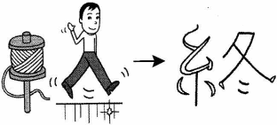

CHUNG - Cuối, Kết thúc
- kanji :
- 終
- Âm Hán Việt:
- CHUNG
- On
- しゅう、 じゅう
- Kun:
- お
- Bộ
- 糸 :MỊCH - sợi tơ nhỏ
冬 :ĐÔNG - mùa đông
|  | Quan hệ giữa chúng tôi đã kéo dài cả 1 thời gian như sợi tơ (糸). Nhưng đã kết thúc vào mùa đông(冬). Our relationship lasted for a long time like a thread(糸), but it ended in winter(冬). 私わたしたちの関かん係けいは糸いとのように |
|
| On: しゅう、 じゅう | Kun: お | |
|
|
|
|
||